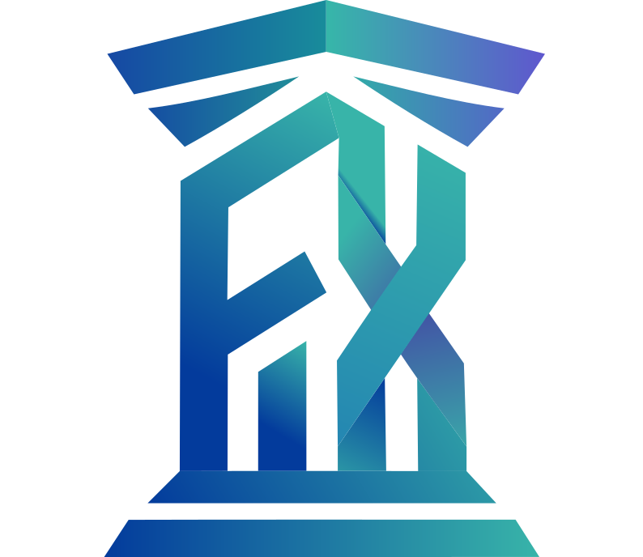
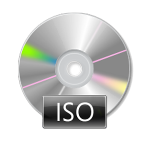

64-битная операционная система, написанная с нуля одним разработчиком из Беларуси без использования искусственного интеллекта. Поддерживает файловую систему Ext4 и даже имеет встроенную прямо в ядро утилиту mkfs.ext4.
x86_64 Architecture • Bare-metal / QEMU Ready • Direct Kernel Execution
